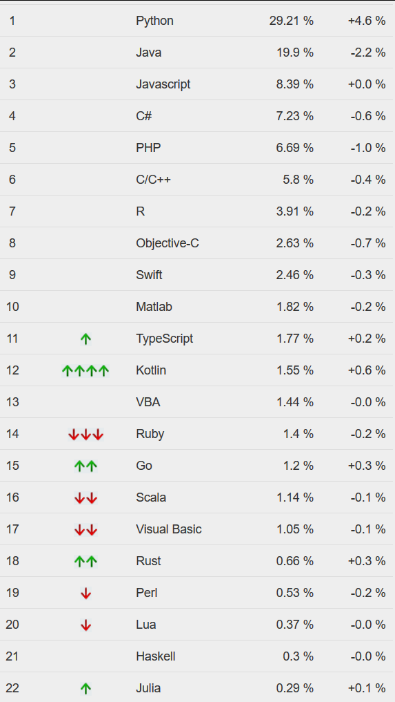

Python
reveal.js
Eine Präsentationssoftware auf Basis von htmlBesuche https://cutt.ly/py3-p, um die Präsentation live mitzuerleben!
Gliederung:
- Übersicht
- Geschichte
- Nutzung
- Philosophie
- Syntax
- Exceptions
- Module
- Quellen
Übersicht
Open Source
Unterstützt
- ObjektOrientierung
- AspektOrientierung
- funktionale Programmierung
- interpretiert
- dynamische Typisierung - Überprüfung von Datentypen zur Laufzeit
C: int a = 12;Python: a = 12Geschichte
- Entwicklungsbeginn: Ende 90er
- Guido van Rossum (Benevolent Dictator for Life)
- Lehrsprache fürs CWI - Niederlande
- Python2: 16. Oktober 2000 - läuft bis Ende 2019
- Python3: 2. Dezember 2008
Nutzung
- schnell einfache Aufgaben erledigen
- Internet und Webentwicklung
- Desktop GUI
- KI
- Wissenschaftliche Anwendungen
Große Projekte mit Python
- NASA
- Yahoo!
- Linux distributionen, z.B. RedHat
Philosophie
- Einfache Syntax
print("Hello World")Syntax
Exceptions
- sehr wichtig in Python
- Werden bei allen Problemen aufgerufen
- Können abgefangen werden
- Es können eigene erstellt werden
Module
- können importiert werden
- enthalten verschiedene Funktionen
- Beispiel:
import datetime #importiert das Modul datetime
print(datetime.datetime.now()) #ruft von der Klasse datetime
#aus dem Modul datetime die Funktion now auf- Einbindung von Modulen aus anderen Sprachen auch möglich
- z.B. aus C oder C++
- meistens Performance-Gründe
Quellen
https://en.wikipedia.org/wiki/Python_(programming_language) https://pypl.github.io/PYPL.html https://insights.stackoverflow.com/survey/2018/ https://www.tiobe.com/tiobe-index/programming-languages-definition/ https://insights.stackoverflow.com/survey/2019/ https://de.wikipedia.org/wiki/Python_(Programmiersprache) https://de.wikipedia.org/wiki/Benevolent_Dictator_for_Life https://de.wikipedia.org/wiki/Objektorientierte_Programmierung https://de.wikipedia.org/wiki/Aspektorientierte_Programmierung https://de.wikipedia.org/wiki/Funktionale_Programmierung https://de.wikipedia.org/wiki/Dynamische_Typisierung https://de.wikipedia.org/wiki/Interpreter https://de.wikipedia.org/wiki/Dynamische_Programmiersprache https://jaxenter.com/energy-efficient-programming-languages-137264.html https://www.digitalocean.com/community/tutorials/python-2-vs-python-3-practical-considerations-2 https://docs.python.org/3/library/datatypes.html https://www.programiz.com/python-programming/variables-datatypes https://www.javatpoint.com/python-data-types https://www.youtube.com/watch?v=1FMCzUPaHzQ&list=PLNmsVeXQZj7q0ao69AIogD94oBgp3E9Zs&index=26 https://www.tutorialspoint.com/python/assertions_in_python.htm https://www.quora.com/What-is-Python-mainly-used-for-in-the-real-world-today-Is-it-beneficial-to-use-Python-for-desktop-appsEigenarbeit
auf https://gjhjhsd.github.io/py3/ könnt ihr weitere Links finden.